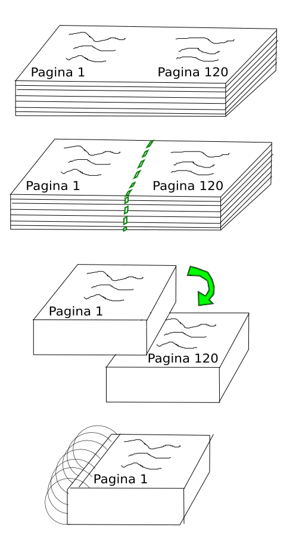
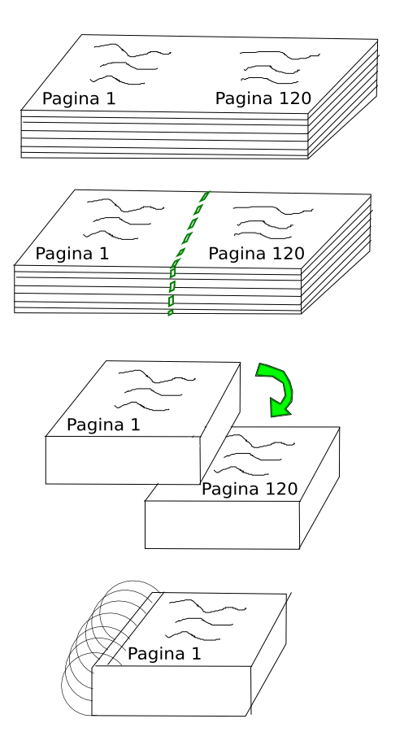

Convertir un libro PDF en formato de libro de mano (handbook) y ahorrar papel

Por lo general solemos tener mucho más que varios libros en formato PDF, pero no hay nada mejor que leer sobre papel, además de que poder leer un libro impreso mientras vas en el transporte publico, mientras esperas que empiece la siguiente clase, o simplemente tenerlo a la mano siempre para leer en cada oportunidad es algo invaluable.
Pero usualmente hay más de un problema con esto:
El papel por ejemplo tiene su costo y si vamos a imprimir 20 libros de entre 500 y 2000+ páginas cada uno, tendremos que pagar una cantidad considerable (tanto si lo imprimimos en casa como si lo llevamos a un centro de impresión), esto además de que siempre es bueno usar la menor cantidad de recursos posibles, tanto por eficiencia, reducción de costos y por conciencia ecológica.
El primer intento por usar menos papel es el más intuitivo: imprimir a doble cara, con lo cual conseguimos que el numero de hojas de papel usadas sea igual a la mitad de las páginas a imprimir, pero un libro del tamaño de una hoja de papel (A4) es algo grande para ser cómodo de llevar siempre a la mano o de leer en un autobús por ejemplo, además en algunos casos el uso de papel sigue siendo considerable.
En un nuevo intento podríamos imprimir varias páginas por plana, hasta el punto en que sea legible (por lo general no más de 2 páginas por plana), y así conseguimos que el numero de hojas de papel empleadas se de 1/4 el numero de páginas del libro a imprimir.
Perfecto! Ahora usaremos mucho menos papel, pero aún tenemos el problema de que el libro resultante es de un tamaño (A4) y simplemente no es lo bastante cómodo.
Lo mejor seria poder cortar las hojas por la mitad aprovechando el hecho de que imprimimos 2 páginas por plana y luego formar el libro de un tamaño A5 el cual si que es cómodo de llevar a la mano, pero al hacerlo las páginas del libro resultan en un desorden completa y absolutamente caótico al intentar colocarlas juntas pues las páginas no se corresponden con la que cada una tiene impresa a su reverso.
Para solucionarlo he aprovechado las herramientas que proporciona el paquete poppler, que lo podemos instalar usando el gestor de paquetes correspondiente a la distribución que usemos. (en ArchLinux: # pacman -S poppler) y he escrito un script que se encargará de reorganizar las páginas del documento de forma apropiada para generar un documento que contiene 2 páginas por hoja de documento.
El script en cuestión es este:
https://github.com/alx741/pdfhbmk/blob/master/pdfhbmk.sh
Lo descargamos y le damos permisos de ejecución:
$ chmod +x pdfhbmk.sh
Luego de asegurarnos de tener instalado poppler en nuestro sistema lo podemos usar así:
$ ./pdfhbmk.sh libro.pdf
Donde libro.pdf es el documento que queremos transformar.
La ejecución del script nos dará como resultado un documento del tipo: handbook_libro.pdf
Lo que haremos con el será realizar una impresión a doble cara, una vez impreso cortamos todas la hojas por la mitad (a lo ancho) para obtener cada pagina separada (en tamaño A5) y en 2 montones, luego tomamos el 1er montón y lo colocamos sobre el 2do montón. Anillamos o encuadernamos el resultado y tenemos nuestro libro de mano.
Será mejor traficar un poco esto…
Luego de haber impreso a doble cara el resultado de ejecutar el script, hacemos:

Y así es como obtienen su libro de mano!, espero sea de utilidad para ustedes tanto como lo es para mi.
Por lo general solemos tener mucho más que varios libros en formato PDF, pero no hay nada mejor que leer sobre papel, además de que poder leer un libro impreso mientras vas en el transporte publico, mientras esperas que empiece la siguiente clase, o simplemente tenerlo a la mano siempre para leer en cada oportunidad es algo invaluable.
Pero usualmente hay más de un problema con esto:
El papel por ejemplo tiene su costo y si vamos a imprimir 20 libros de entre 500 y 2000+ páginas cada uno, tendremos que pagar una cantidad considerable (tanto si lo imprimimos en casa como si lo llevamos a un centro de impresión), esto además de que siempre es bueno usar la menor cantidad de recursos posibles, tanto por eficiencia, reducción de costos y por conciencia ecológica.
El primer intento por usar menos papel es el más intuitivo: imprimir a doble cara, con lo cual conseguimos que el numero de hojas de papel usadas sea igual a la mitad de las páginas a imprimir, pero un libro del tamaño de una hoja de papel (A4) es algo grande para ser cómodo de llevar siempre a la mano o de leer en un autobús por ejemplo, además en algunos casos el uso de papel sigue siendo considerable.
En un nuevo intento podríamos imprimir varias páginas por plana, hasta el punto en que sea legible (por lo general no más de 2 páginas por plana), y así conseguimos que el numero de hojas de papel empleadas se de 1/4 el numero de páginas del libro a imprimir.
Perfecto! Ahora usaremos mucho menos papel, pero aún tenemos el problema de que el libro resultante es de un tamaño (A4) y simplemente no es lo bastante cómodo.
Lo mejor seria poder cortar las hojas por la mitad aprovechando el hecho de que imprimimos 2 páginas por plana y luego formar el libro de un tamaño A5 el cual si que es cómodo de llevar a la mano, pero al hacerlo las páginas del libro resultan en un desorden completa y absolutamente caótico al intentar colocarlas juntas pues las páginas no se corresponden con la que cada una tiene impresa a su reverso.
Para solucionarlo he aprovechado las herramientas que proporciona el paquete poppler, que lo podemos instalar usando el gestor de paquetes correspondiente a la distribución que usemos. (en ArchLinux: # pacman -S poppler) y he escrito un script que se encargará de reorganizar las páginas del documento de forma apropiada para generar un documento que contiene 2 páginas por hoja de documento.
El script en cuestión es este:
https://github.com/alx741/pdfhbmk/blob/master/pdfhbmk.sh
Lo descargamos y le damos permisos de ejecución:
$ chmod +x pdfhbmk.shLuego de asegurarnos de tener instalado poppler en nuestro sistema lo podemos usar así:
$ ./pdfhbmk.sh libro.pdfDonde libro.pdf es el documento que queremos transformar.
La ejecución del script nos dará como resultado un documento del tipo: handbook_libro.pdf
Lo que haremos con el será realizar una impresión a doble cara, una vez impreso cortamos todas la hojas por la mitad (a lo ancho) para obtener cada pagina separada (en tamaño A5) y en 2 montones, luego tomamos el 1er montón y lo colocamos sobre el 2do montón. Anillamos o encuadernamos el resultado y tenemos nuestro libro de mano.
Será mejor traficar un poco esto…
Luego de haber impreso a doble cara el resultado de ejecutar el script, hacemos:

Y así es como obtienen su libro de mano!, espero sea de utilidad para ustedes tanto como lo es para mi.